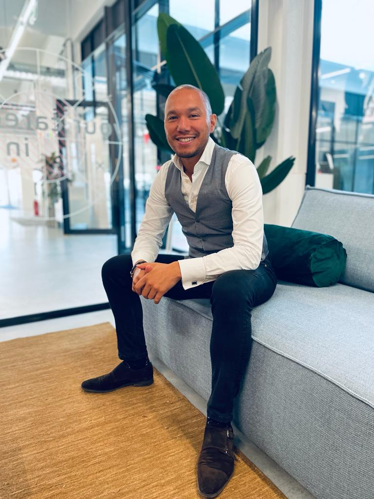

Elke dag wachten verkleint de kans op jouw ideale kandidaat. Daarom bouwt en traint MMD jouw eigen AI-recruitmentteam dat 24/7 kandidaten vindt, benadert en kwalificeert.
Ontdek hoe jij de concurrent vóór bent bij het aannemen van de beste kandidaten.

Je vacature staat online, op je werkenbij-pagina, zet jobboards (betaald) in en post de functie op je socials... Maar de beste kandidaten hebben al een baan. Zij zoeken niet actief en komen dus nooit op jouw vacature terecht.
Het AI-recruitmentteam zoekt, benadert en vindt de intrinsieke motivaties. De reden 'waarom' mensen eventueel openstaan voor een nieuwe baan. Traditionele en verouderde wervingsmethodes zijn gericht op solliciteren, de nieuwe methode is gericht op connectie en verdieping.
Je bent continu afhankelijk van externe partijen die marges per uur doorberekenen of absurde w&s fees hanteren per persoon.
MMD bouwt en traint jouw team van AI recruiters. Hetzelfde systeem dat bureaus gebruiken. Stop met betalen van hoge marges en fees.
Je al drukke managers, HR of collega's de opdracht geven om recruitment "er nog even bij" te doen. Resultaat is dat vacatures open blijven en de dagelijkse druk verder oploopt.
Recruitment draait achter de schermen op volle toeren door. AI zoekt, benadert, plant gesprekken en kwalificeert kandidaten automatisch. Jij spreekt alleen nog maar met gekwalificeerde kandidaten.
Traditionele recruitment wacht af en is gericht op de actief werkzoekende kandidaten. En deze poel is nagenoeg leeg. Maar de beste kandidaten zoeken niet actief en zien jouw vacature vaak nooit.
Van afwachten naar actief benaderen van passieve kandidaten! AI zoekt dagelijks de juiste kandidaten, benadert ze persoonlijk en kwalificeert automatisch alleen de beste matches.
Je bent je ervan bewust dat online data steeds belangrijker wordt de meer we digitaliseren. Maar je hebt de kennis niet in huis om deze specifieke geautomatiseerde AI en Algoritmesystemen op te zetten.
Samen met jou creëren wij de perfecte AI agents die we koppelen aan het systeem en intern bij jou en voor jou werken. Alle online gegenereerde data blijft van jou i.p.v. de externe bureaus. Zo wordt je echt onafhankelijk.
...worden honderden kandidaten vandaag automatisch benaderd door bedrijven die AI recruiters inzetten.
De vraag is niet óf recruitment digitaliseert.
De vraag is of jij voor- of achterop wilt lopen.
Hoe langer je wacht, hoe kleiner de kans op jouw ideale kandidaat.